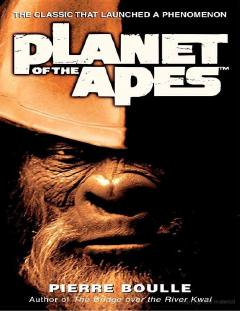

POMaymunlar hukmronlik qiladigan o'zga sayyoraga tushib qolgan insonning hayratlanarli sarguzashtlari.
Ushbu asar insoniyat sivilizatsiyasi tanazzulga yuz tutgan va maymunlar hukmronlik qiladigan o'zga sayyoradagi voqealarni hikoya qiladi. Muallif jamiyatdagi hokimiyat, insoniy takabburlik va ijtimoiy tuzumning zaif tomonlarini o'tkir kinoya bilan tahlil qiladi.